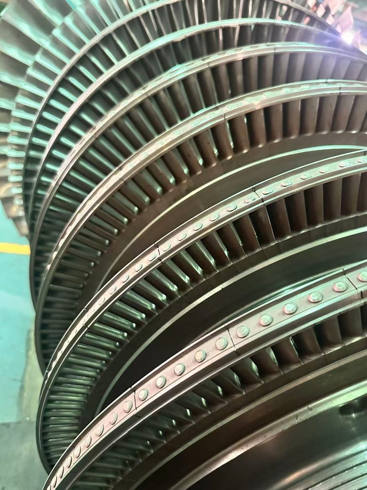
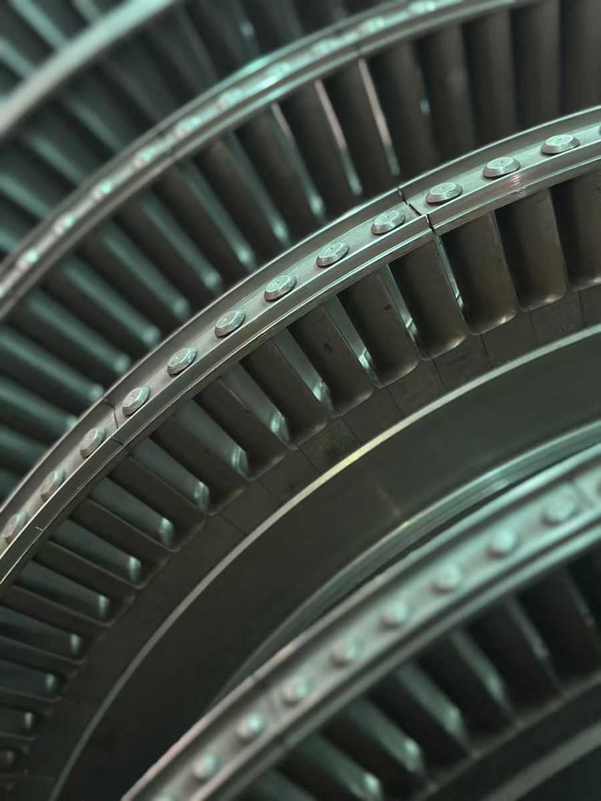

独立的全流程工程技术机构
ROTODYN 从事燃气轮机设备的设计、计算与试验，并向合作伙伴移交技术文件。我们不是维护自有产品平台的制造商：生产由实际制造机组的合作伙伴负责。

名称由来
转子与动力学
ROTODYN 由“转子”（rotor）和“动力学”（dynamics）两个词组合而成。这个名字源自一支燃气轮机设计团队：从微型燃气轮机到 75 MW 机组，他们完成设计计算，并在试验台上将机组调试成熟。
在俄罗斯，公司以俄文名称 Ротодин 开展业务。

团队
来自透平行业的核心设计团队
22名核心设计人员
600+年累计从业经验
5人拥有副博士及以上学位，其中包括一名技术科学博士、教授
70+名工程师与专业人员（扩展团队）
经验
数字背后
- 总设计师：技术科学博士、教授。曾领导发动机制造企业的强度与设计部门；出版专著一部，发表论文 96 篇，拥有专利 8 项。
- 团队经验：6–1200 MW 汽轮机及 400 MW 以下燃气轮机；参与推动带热障涂层单晶叶片实现批量生产。
- 14 名专家拥有 20 年以上经验。项目团队按合同从 70 余名工程师与专业人员组成的人才库中组建。
- 专家从业背景：俄罗斯发动机制造企业、GE、Siemens、Alstom、Ansaldo Energia、ABB、Pratt & Whitney、Nuovo Pignone。

专业能力
每个专业均由专人负责
通流部分气动与热力
数值仿真与 CFD
叶片冷却、传热与二次空气系统
材料、铸造与防护涂层
强度、转子动力学与寿命
结构设计与设计文件
压气机与辅助设备
项目管理与商务
工作原则
我们的工作方式
以工程数据说话
用数据、方法和适用范围说话，不做广告式承诺。
成果归合作伙伴
联合项目的成果权利归合作伙伴公司所有。
Rotodin 有限责任公司，俄罗斯莫斯科
总经理：Nikolay Yarmak
工作语言：俄语、英语、中文
告诉我们您的需求
首次沟通免费：通过一至两次通话了解项目内容与限制条件，随后提交包含工作范围、进度和费用的技术建议书。